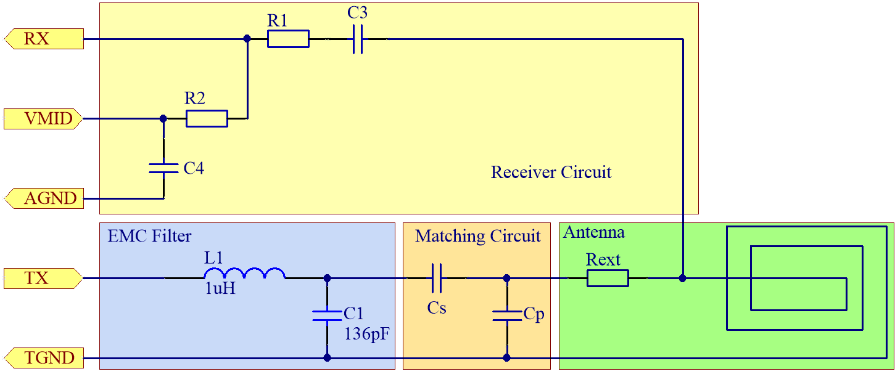
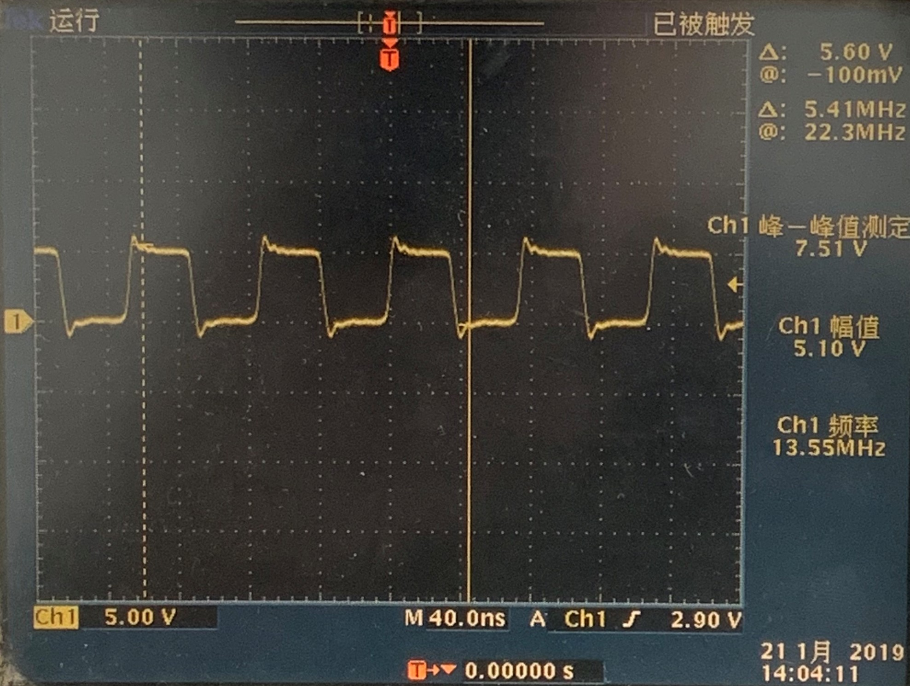
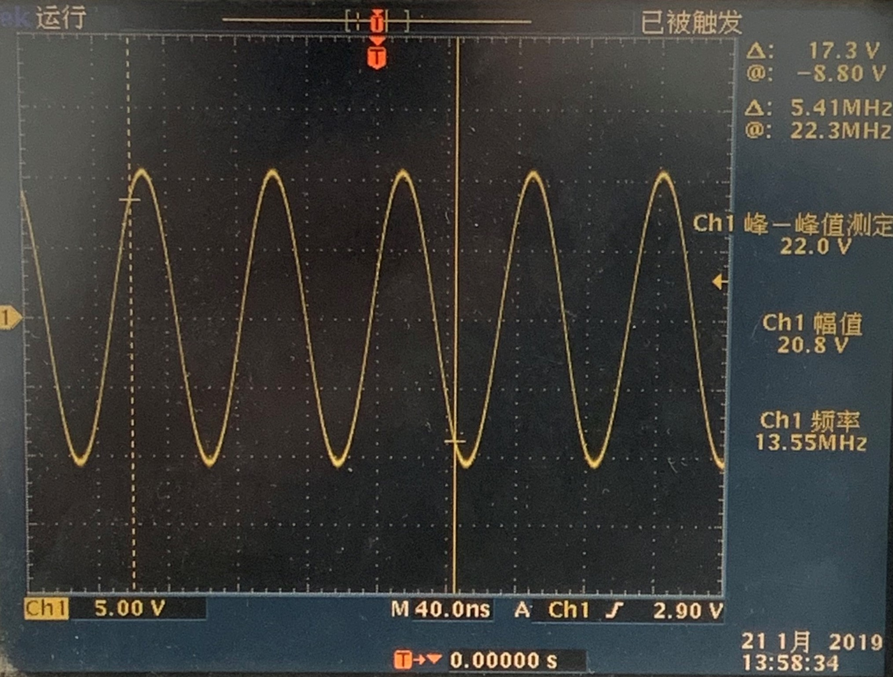
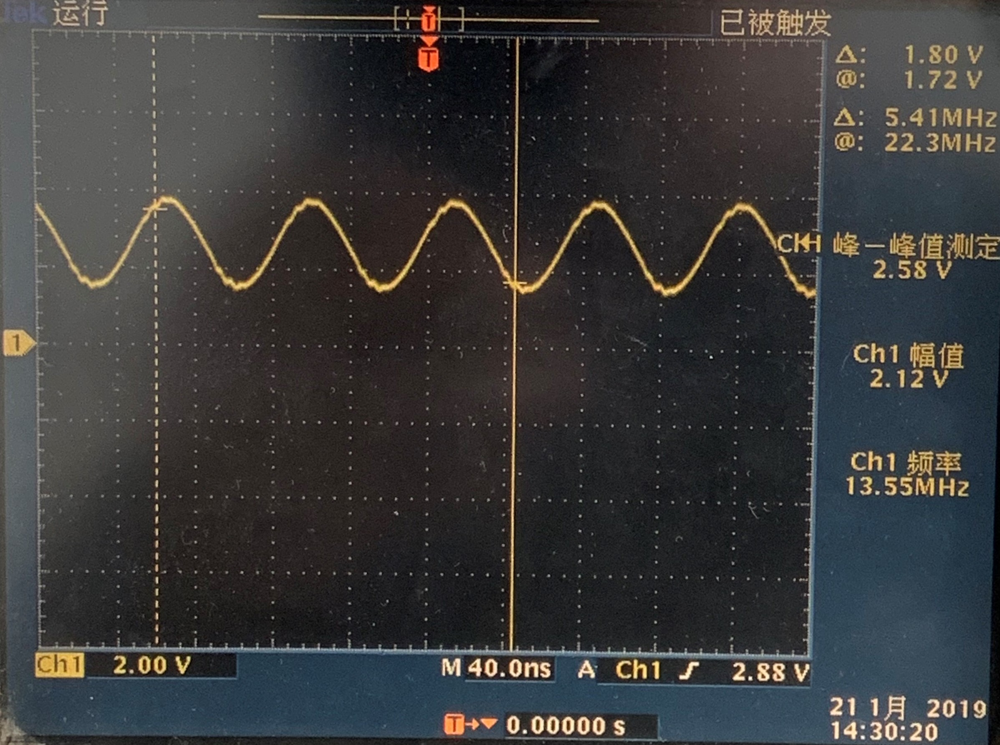
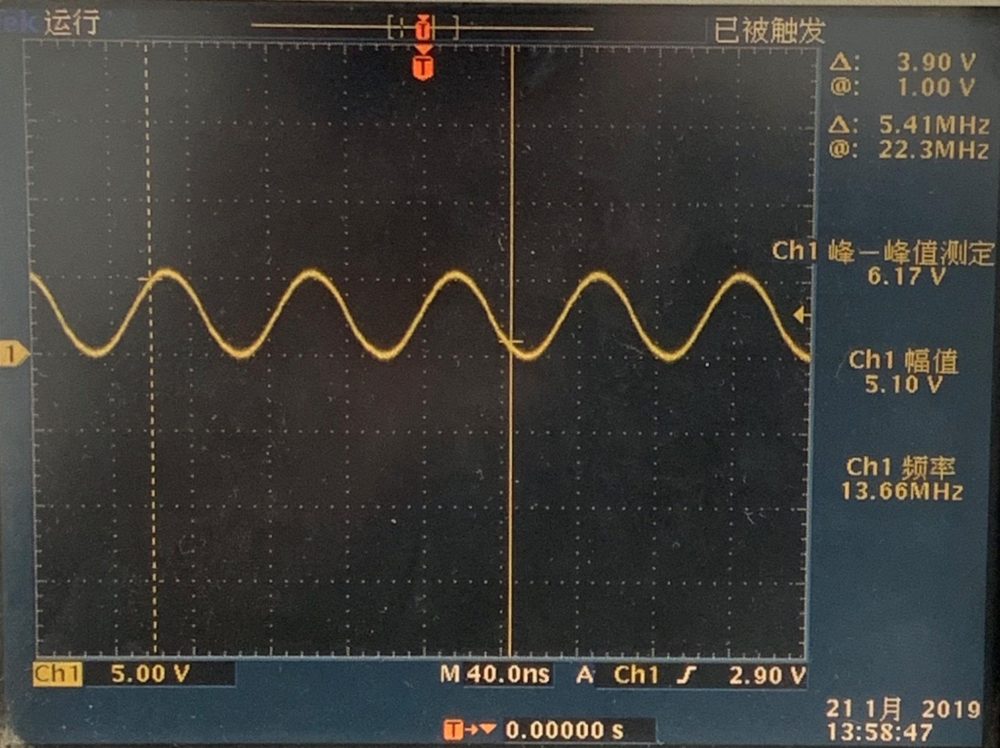
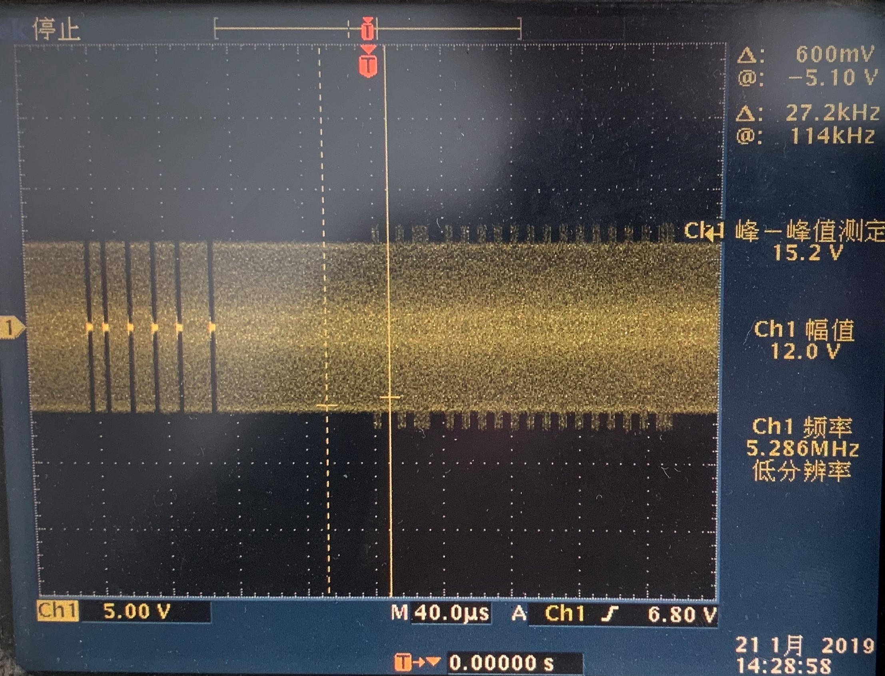
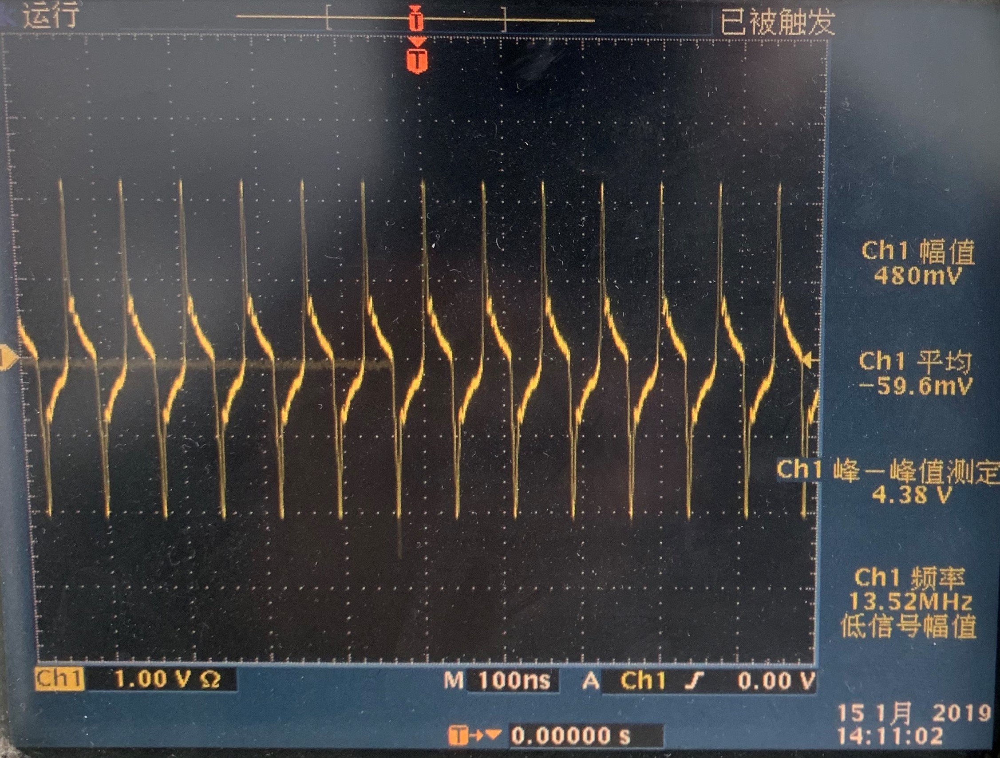
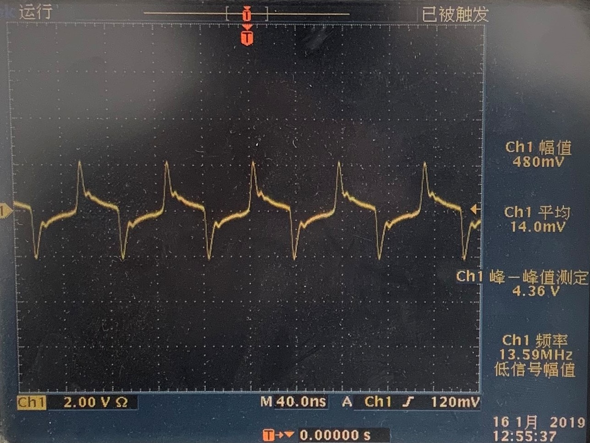
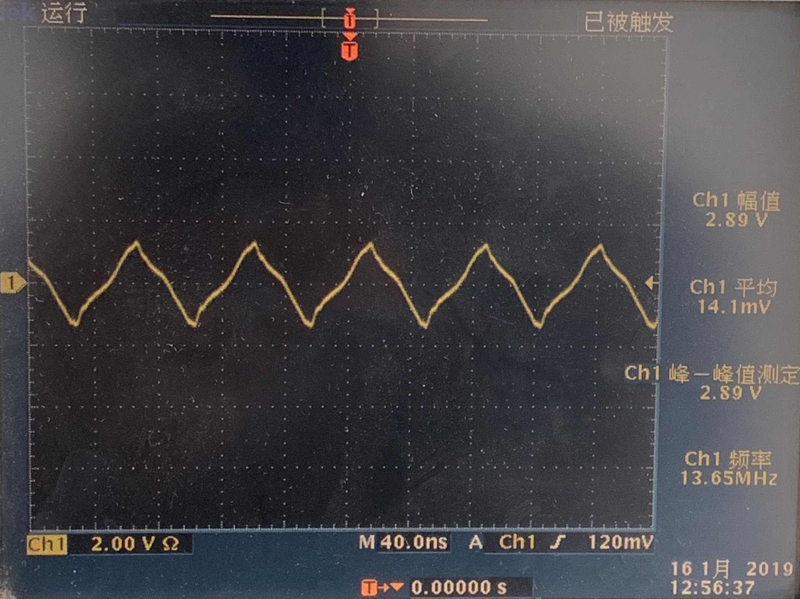
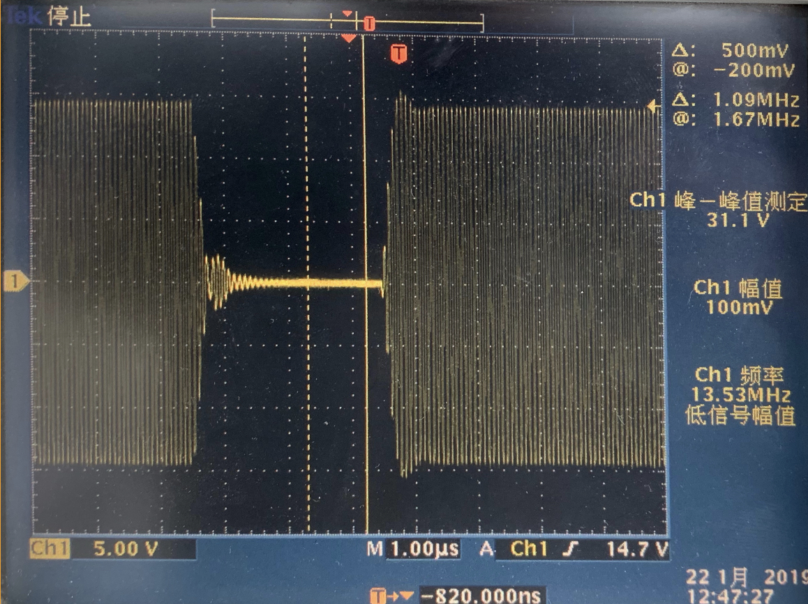

一、參考文檔¶
二、硬件設計¶
因為FM1702Q的硬件設計不太複雜，所以我這主要以文字進行描述。
- TVDD、RVDD採用5V 2596電源，近芯片端均加入0.1uF的濾波電容，並在5V的輸入口放置10uF 6.3V的大電容，以提供低紋波的直流電源。
- DVDD採用3V3 LDO供電，用於節省和STM32F1系列片子配合的74邏輯電平轉換電路。
- SPI均採用外置強上拉。
- 天線設計時，參考MFRC500的應用指南，有天線線圈、屏蔽、內外補償、固定去調（鐵氧體）四個部分組成。
- 發送和接收、匹配的設計如下圖所示：
天綫設計中，根據《设计MF RC500 的匹配电路和天线的应用指南》中的第五章介紹和《13.56 MHz RFID讀寫器天線的設計與仿真》論文，雙層板也應在天綫背面增加覆銅（模擬鉄屏蔽），給天綫固定一個去調。在天綫正面應根據設計，適當增加内外補償綫圈。

天線部分電路設計應該遵循以下原則：
- Cs 、Cp都分成2只並聯的電容，便於將來調整參數。
- C1、Cs 、Cp要選用精度為±2％或者更高等級，COG材質（溫度係數小）的電容。這樣才能保證批量生產時產品的性能一致性。
- 電感應該用0805以上的封裝，且電感額定電流要在150毫安以上。在無極其成本敏感地方，應盡量采用TDK的鐵氧體屏蔽電感（1uH 400mA）。
- PCB線圈的設計的一般原則是設計為與所讀的卡片大小一致最好。
- PCB線圈的圈數問題，長寬在3x3cm以上4圈即可，如果是在3x3cm以下將圈數增加至6圈或者更多。
- PCB線圈的綫寬建議選用20mil-40mil之間，綫與綫之間的間距等於綫寬，線圈拐角以圓弧過渡最好。
- 在應用於有金屬平面的情況下，建議采用4層板屏蔽的畫法，如果是兩層板也一定要在背面加屏蔽和鐵氧體層。
- 整個發射電路所有器件的地必須連接到同一根地線上並且返回芯片的TVSS腳，且天線電路器件附近不可大面積覆銅，器件之間以導線連接。
三、天綫調試¶
主要有以下步驟：
- 调试EMC电路
- 调试天线谐振点（如果能調）
- 调试Match电路
- 调试接收电路，保证RX端的Vpp在0.5RVDD ~ RVDD之间
上訴示意圖中天綫的各個器件的作用説明：
Cp的作用是改變天線的諧振頻率，更改這個值會改變天線的出口電壓和空中感應電壓（可用示波器組環狀探頭測試），此值可以通過理論計算得到初值，然後上下調整容值，看下變化趨勢，將天綫的出口電壓調到最大即可。
Cs的作用是做天線阻抗匹配，理論經驗值為10pF - 30pF，調節此處容值，主要表現在發送調制信號時，過冲和振鈴的大小，按照ISO14443A中的規定，過冲應控制在天綫的幅度的90%-110%，振鈴幅度應小於天綫的幅度的5%。
C1、C3、C4和L1基本上按照芯片手冊推薦選值即可。
調整RX電路的接收賦值時，應當根據DVDD的供電電壓進行選擇，如果DVDD為3V，空載下，RX的值應在1.5Vpp到3Vpp之間，幅值越大越好；DVDD為5V，空在下，RX的值應在2.5Vpp到5Vpp之間，幅值越大越好。 R2/R1的值越大，RX的接收電壓也越大，黨RX值不在推薦值，應當適當調整。
EMC C1 x L1的截止頻率應在13.56mHz，故在L1為1uH的情況下，C1的選值應爲136pF（68pF x 2），但爲了簡化設計，可考慮單電容120pF，大概截止頻率在14.5mHz。
以下的調試過程中保證天綫背面無鉄平面：
由於我個人的調試設備過於簡單，只有示波器可用（阻抗為1M），所以我簡單對我的調試過程做下記錄：
- EMC的電路選擇為1uH和136pF。
- 確認Cs為20pF。
- 按照芯片手冊的Cp計算值，在此值上下尋找合適容值，使天綫兩端電壓達到最大的Vpp，且不失真。
- 調整R2/R1的值，使RX在正常的Vpp範圍内。
- 看下過冲和振鈴，如果有問題，改變Cs的值重新調整，調Cp時也會改變，但此處一般不用調。
正常的波形如下所示（電感前端、天綫兩端、RX管脚）：




確認讀卡器是否可以正常工作，就是看下對應的調製波形，是否發出命令，卡片有返回，下圖為尋卡指令的示意圖：

以下為調試過程中走過的彎路，電源供電不足時，電感前後端的波形和RX上的波形：
  
下面這個就是過冲和振鈴，如果過大，請調節Cs：
